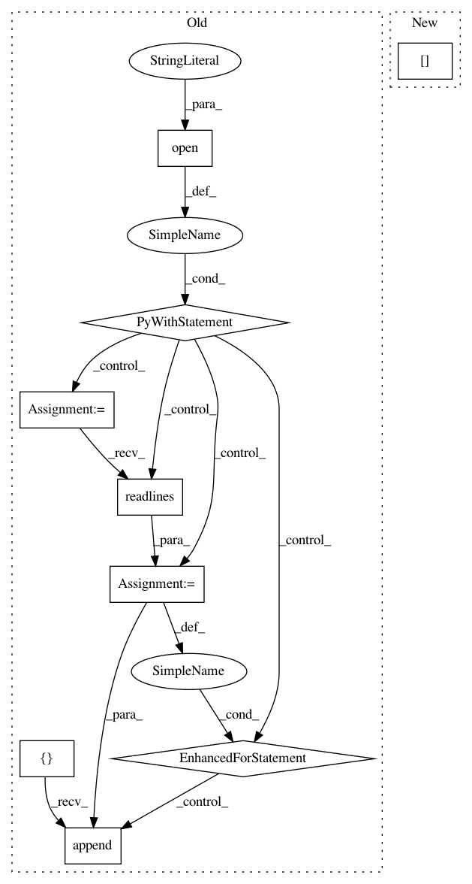

e485b12acb290ba9bd7670179144e92ffd31d0bc,python/vmaf_quality_runner.py,VmafQualityRunner,_get_quality_scores,#VmafQualityRunner#Any#,125
Before Change
// read VMAF scores
log_file_path = self._get_log_file_path(asset)
vmaf_scores = []
vmaf_idx = 0
with open(log_file_path, "rt") as log_file:
for line in log_file.readlines():
mo_vmaf = re.match(r"vmaf: ([0-9]+) ([0-9.]+)", line)
if mo_vmaf:
cur_vmaf_idx = int(mo_vmaf.group(1))
assert cur_vmaf_idx == vmaf_idx
vmaf_scores.append(float(mo_vmaf.group(2)))
vmaf_idx += 1
// add VMAF scores
result[self.TYPE + "_scores"] = vmaf_scores
return result
After Change
repr_asset = repr(asset)
assert repr_asset in self.asset2quality_map
return self.asset2quality_map[repr_asset]
def _remove_log(self, asset):
Remove VmafFeatureExtractor"s log instead
In pattern: SUPERPATTERN
Frequency: 3
Non-data size: 9
Instances
Project Name: Netflix/vmaf
Commit Name: e485b12acb290ba9bd7670179144e92ffd31d0bc
Time: 2016-02-12
Author: zli@netflix.com
File Name: python/vmaf_quality_runner.py
Class Name: VmafQualityRunner
Method Name: _get_quality_scores
Project Name: NifTK/NiftyNet
Commit Name: 0a3c1aa4d67cb9c49f22a87bef180c07dfafec8a
Time: 2017-06-16
Author: wenqi.li@ucl.ac.uk
File Name: testing/get_gpu_index.py
Class Name:
Method Name:
Project Name: NifTK/NiftyNet
Commit Name: aa495c2ace9444aa5028f699ae62dddef45ab7d9
Time: 2017-06-15
Author: wenqi.li@ucl.ac.uk
File Name: testing/get_gpu_index.py
Class Name:
Method Name: